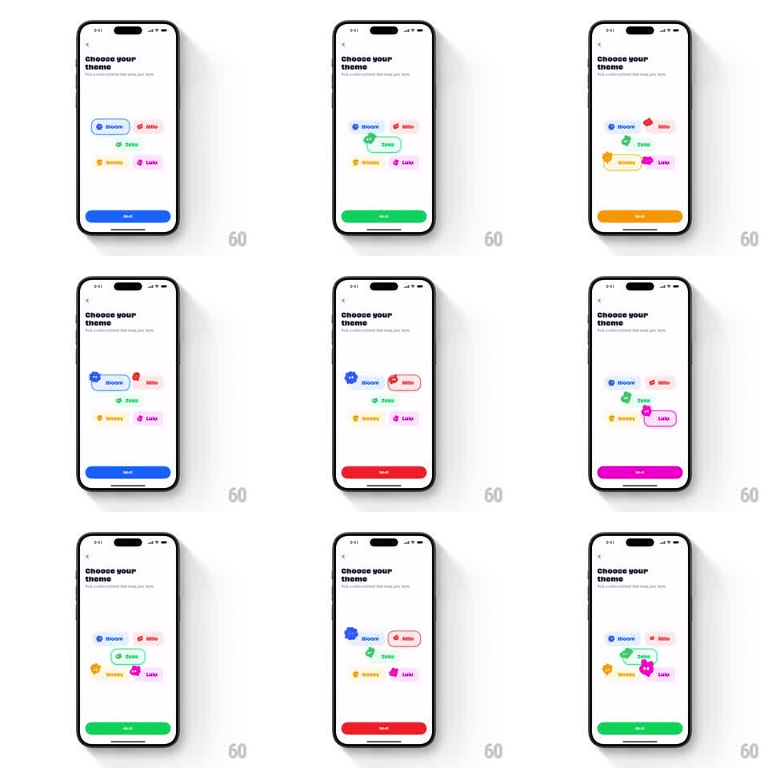

Media
Frame-by-frame

Rebuild this interaction 1:1: Abode's "Choose your theme" picker - five color theme pills (Bloom blue, Milo red, Zoke green, Boomy orange, Lulu magenta) float loose on the screen, and tapping one expands it into a selected blob shape with an animated mascot while the Next button instantly recolors to the theme.

Rebuild this interaction 1:1: Abode's "Choose your theme" picker - five color theme pills (Bloom blue, Milo red, Zoke green, Boomy orange, Lulu magenta) float loose on the screen, and tapping one expands it into a selected blob shape with an animated mascot while the Next button instantly recolors to the theme. ## Integration Integration: stack-agnostic spec - springs given as stiffness/damping, timed motions as duration + curve; map every value to your framework and animation library of choice. ## Scene White screen: "Choose your theme" headline, subcopy about picking a color scheme. Five pills in a loose two-column scatter, each a tinted pill with a theme name and tiny dot mascot: Bloom (blue), Milo (red), Zoke (green), Boomy (orange), Lulu (magenta). Bottom: a full-width Next button that takes on the selected theme's color. ## Motion spec Pattern: expanding selection pill with mascot reveal and live button recolor. - Idle: pills drift gently (translateY +/-4pt, 3.5s sine, phase-offset). - Tap a pill: it expands into an organic blob outline (scale 1 -> 1.25, border radius morphs 20pt -> blob path, spring ~300/16) in its theme color, and its mascot character pops out of the dot (scale 0 -> 1.15 -> 1.0, spring ~320/15) with a wiggle. - The previously selected pill deflates back to its resting pill shape (200ms ease-in) as the new one expands. - The Next button recolors immediately on selection (color crossfade 150ms) with a quick pulse (scale 1 -> 1.03 -> 1). - The selected mascot idles with a bob (translateY +/-3pt, 2s sine) while selected. ## Calibration - Only one pill is expanded at a time; the swap is a deflate-then-expand, overlapping by ~100ms. - The button recolor is instant-feeling - it never waits for the pill animation to finish. ## Reduced motion Selection swaps with a 200ms crossfade; button recolors without the pulse. ## Don't miss - The blob shape is organic and asymmetric - not a rounded rect with a bigger radius. - Each theme's mascot is a different little character matching its color.